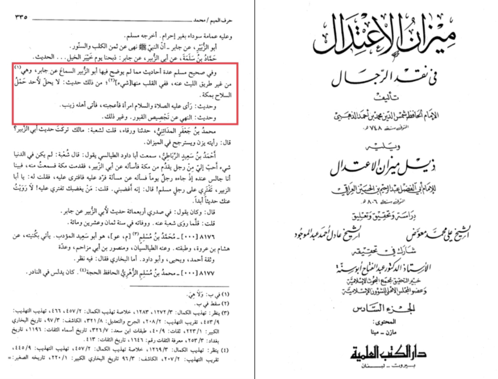
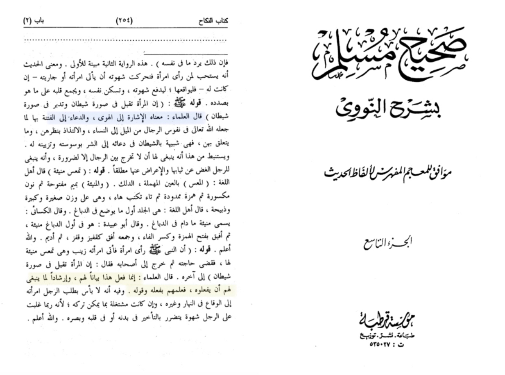

There are 2 claims in this particular hadith first that the prophet was lustful second that the woman is a shaytan
Translation: “and in sahih muslim there are hadith that Abu al-Zubair didn’t specify hearing from Jabir bin Abdullah
such as the hadith of No one carrying armes in mecca , the prophet seeing a women then having intercourse with zainab”
-Source: Mizan al-itidal fi nakd al-rijal al-dhahabi volume 6 page number 335

The hadith were it mentions this story are only found from there narration the more trustworthy don’t include it
meaning this story is unauthentic
Translation: “Qadi ‘Iyad and ‘Allamah Nawawi (rahimahumallah) explain that this does not mean that Nabi
(sallallahu ‘alayhi wa sallam) had become affected -Allah forbid- when he saw the woman. Rather Nabi
(sallallahu ‘alayhi wa sallam) showed us and demonstrated what we should do in a case like this.
He did this so that we too do the same. His actions were meant as guidance.”
-Source: Sharh Sahih muslim (9/254)

And an-nawawis explanation of a woman being a shaytan he says the scholars have said that a woman
throw her tabruj makes a higher level of fitnah